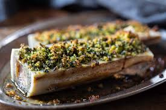

Bone Marrow

Our hot take on this classic dish
One of our all time favorites, having become increasingly popular over the past few years. Here is our
winning recipe for one of the all time classic dishes
What you'll need
Bone marrow canoes - 500g
Anchovies
Garlic
Salt & pepper
Olive oil
Parsley leaves
Method
- Preheat the oven
- Lay the marrow on a oven proof tray and bake for 10mins
- In a food processor, add all the ingredients and blitz till a fine paste
- After the 10minutes has passed, remove the bone marrow from the oven. Spoon on the
crumb, so that it covers the whole bone, add a touch more seasoning and cook for another 10minutes.
Or until golden and crisp.